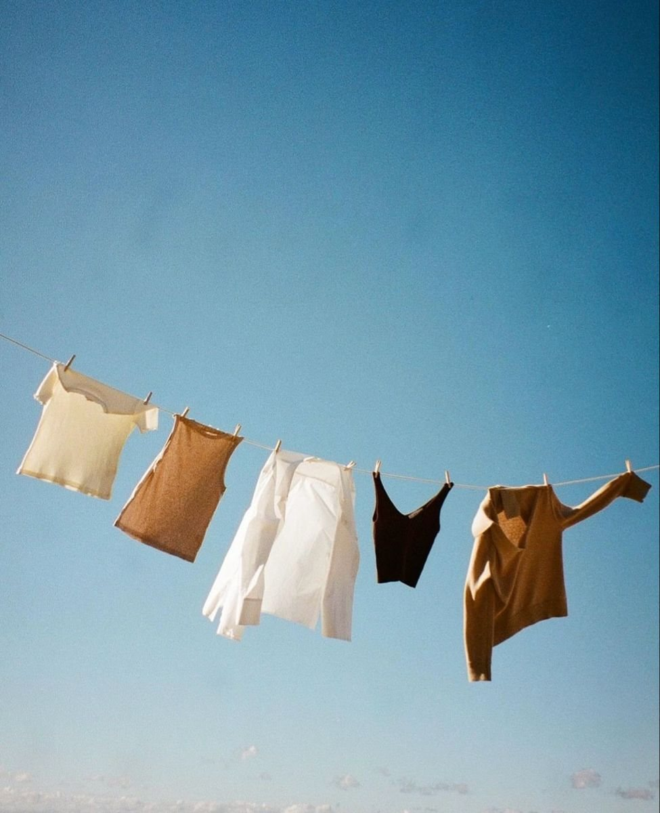

세탁 기호
세탁 기호는 옷 안쪽 라벨에 붙는 표시 29개와 그 뜻입니다.
29개
- 물세탁 95 °C
- 물세탁 60 °C
- 물세탁 60 °C 약하게
- 물세탁 40 °C
- 물세탁 40 °C 약하게
- 물세탁 40 °C 매우 약하게
- 물세탁 30 °C
- 물세탁 30 °C 매우 약하게
- 손세탁
- 물세탁 금지
- 표백제 사용 가능
- 산소계 표백제만
- 표백 금지
- 텀블 건조 보통 온도
- 텀블 건조 낮은 온도
- 텀블 건조 금지
- 줄에 걸어 건조
- 탈수 없이 걸어 건조
- 뉘어서 건조
- 그늘에 걸어 건조
- 다림질 200 °C
- 다림질 150 °C
- 다림질 110 °C
- 다림질 금지
- 드라이클리닝 P
- 드라이클리닝 P 약하게
- 드라이클리닝 F
- 전문 웨트클리닝
- 드라이클리닝 금지
기호는 KS K ISO 3758을 따랐고 모양은 단순하게 다시 그렸다. 국내 옛 표시(한글이 들어간 기호)는 넣지 않았다.
읽는 순서
세탁 기호는 대개 물세탁, 표백, 건조, 다림질, 전문 세탁 순으로 한 줄에 붙는다. 기호 아래 밑줄은 약하게 다루라는 뜻이고, 줄이 늘수록 더 약하게 다룬다. 가위표가 그어진 기호는 그 처리를 하지 않는다는 뜻이다.
